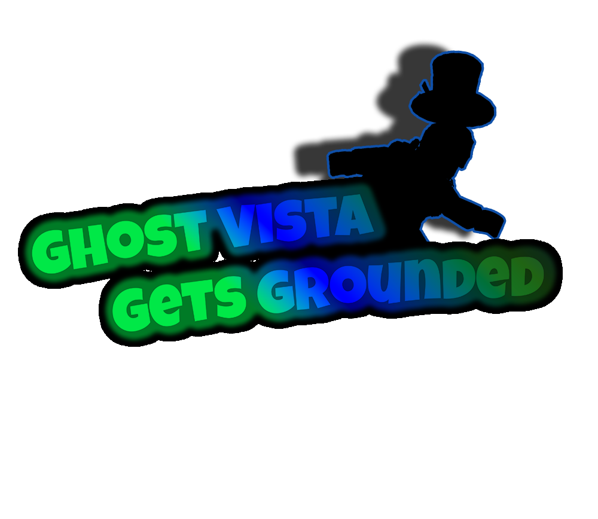

GhostVista Gets Grounded (GVGG)

GhostVista Gets Grounded es una serie web animada de comedia creada por GhostVista, que sigue las desventuras de una versión ficticia de GhostVista como un adolescente problemático. La serie es conocida por su humor, situaciones exageradas y su visión satírica del género de "videos de castigos" popular en Internet.
Sobre la Serie
En GVGG, GhostVista se mete en todo tipo de problemas, a menudo resultando en ser castigado por sus padres por razones cada vez más ridículas. El programa combina el humor clásico de dibujos animados con la cultura moderna de Internet, convirtiéndolo en un favorito entre los fanáticos de la parodia y la animación.
Características Clave
- Serie animada de comedia con aventuras episódicas
- Visión satírica del género "castigado"
- Creado, escrito y con voces de GhostVista
- Enfocado en el humor, la creatividad y la comunidad en el universo de ToadVille Bay